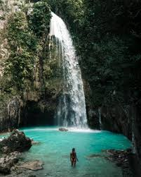

Inambakan Falls, Cebu:
Inambakan Falls: A Natural Paradise in Cebu
Located in Ginatilan, Cebu, *Inambakan Falls* is a hidden gem that promises an unforgettable experience. The falls are a series of cascading waterfalls, with the main drop reaching around 100 feet. The water is incredibly clear, flowing into a beautiful, large natural pool that is perfect for swimming and relaxation.
One of the highlights of Inambakan Falls is its enchanting surroundings. The lush green forest, towering trees, and cool mist from the falling water create a peaceful and rejuvenating atmosphere. Visitors can enjoy a refreshing swim in the pools below or take a walk along the nearby trails that lead to different tiers of the falls.
Aside from its beauty, Inambakan Falls is also an ideal spot for adventurers. The trek to the falls involves passing through rugged paths, rocky terrain, and small rivers, making it an exciting journey for outdoor enthusiasts. Once you reach the falls, the majestic sight of the cascading water is truly rewarding.
---
Highlights of Inambakan Falls:
1. *Stunning Waterfalls*: The multi-tiered Inambakan Falls offers a mesmerizing sight as water cascades from a height of around 100 feet into crystal-clear pools below.
2. *Refreshing Pools*: The natural pools formed at the base of the falls are perfect for swimming, offering visitors a cool and relaxing experience.
3. *Lush Surroundings*: The falls are surrounded by dense green forests, creating a tranquil environment where visitors can connect with nature and enjoy the peaceful atmosphere.
4. *Trekking Adventure*: The journey to Inambakan Falls involves an exciting hike through the rugged terrain, small rivers, and forest trails, making it an ideal spot for adventure enthusiasts.
5. *Photogenic Beauty*: The beauty of Inambakan Falls, with its cascading waters and surrounding landscape, makes it a perfect place for photography and nature lovers.
6. *Secluded and Peaceful*: Inambakan Falls remains relatively untouched by mass tourism, offering a peaceful retreat for those looking to escape the crowds and immerse themselves in nature.
Inambakan Falls is a must-visit destination for anyone exploring Cebu, offering a combination of natural beauty, adventure, and tranquility in one unforgettable experience.